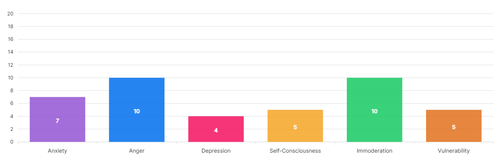

Scale: 0 (Low) to 100 (High)
Neuroticism refers to the tendency to experience negative feelings. Freud originally used the term neurosis to describe a condition marked by mental distress, emotional suffering, and an inability to cope effectively with the normal demands of life. He suggested that everyone shows some signs of neurosis, but that we differ in our degree of suffering and our specific symptoms of distress. Today neuroticism refers to the tendency to experience negative feelings.
Those who score high on Neuroticism may experience primarily one specific negative feeling such as anxiety, anger, or depression, but are likely to experience several of these emotions.
People high in neuroticism are emotionally reactive. They respond emotionally to events that would not affect most people, and their reactions tend to be more intense than normal. They are more likely to interpret ordinary situations as threatening, and minor frustrations as hopelessly difficult.
Their negative emotional reactions tend to persist for unusually long periods of time, which means they are often in a bad mood. These problems in emotional regulation can diminish a neurotic's ability to think clearly, make decisions, and cope effectively with stress.
Your score on Neuroticism is low, indicating that you are exceptionally calm, composed and unflappable. You do not react with intense emotions, even to situations that most people would describe as stressful.

The "fight-or-flight" system of the brain of anxious individuals is too easily and too often engaged. Persons low in Anxiety are generally calm and fearless.
Persons who score high in Anger feel enraged when things do not go their way. Low scorers do not get angry often or easily.
This scale measures the tendency to feel sad, dejected, and discouraged. Low scorers tend to be free from these depressive feelings.
Low scorers do not suffer from the mistaken impression that everyone is watching and judging them. They do not feel nervous in social situations.
Low scorers do not experience strong, irresistible cravings and consequently do not find themselves tempted to overindulge.
Low scorers feel more poised, confident, and clear-thinking when stressed.